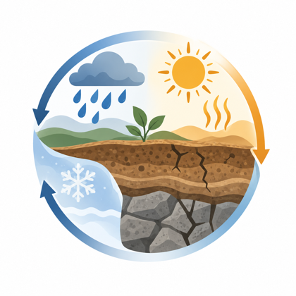
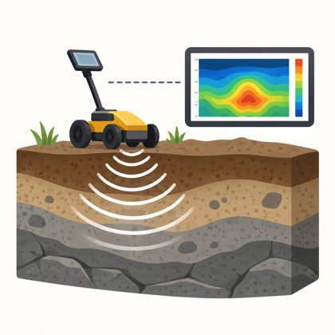
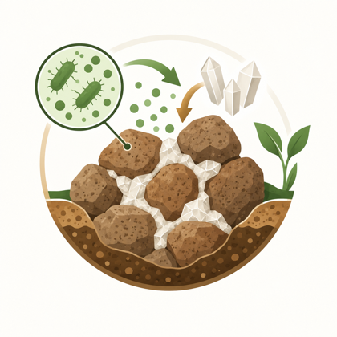
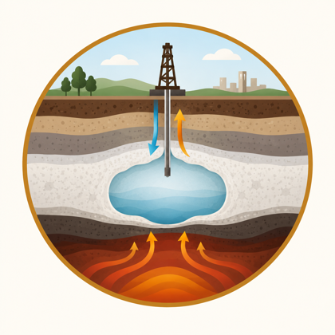
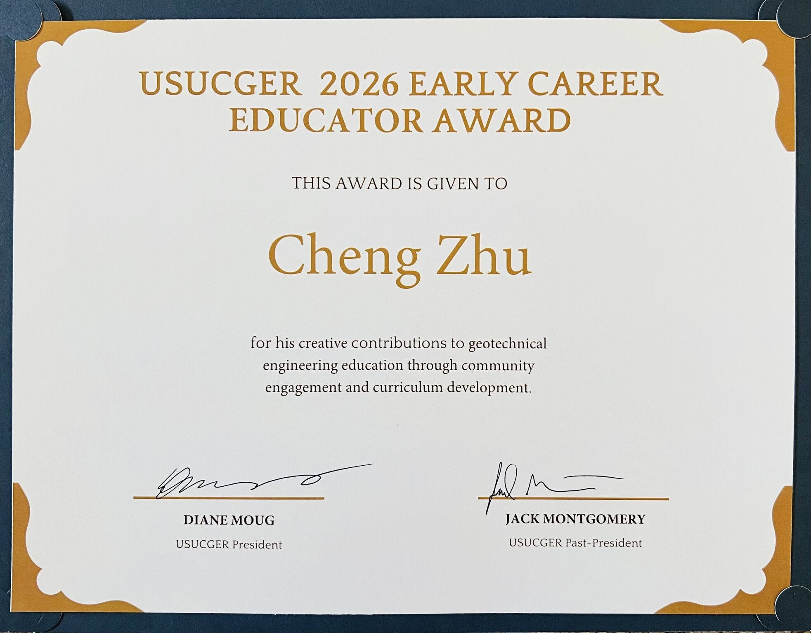

Geomaterial-Climate Interaction
Soil and rock responses to climate and extreme weather.
 Rowan UniversityDepartment of Civil and Environmental Engineering
Rowan UniversityDepartment of Civil and Environmental EngineeringGeoSMART Laboratory
Research in geosystems sensing, modeling, adaptation, resilience, and technology within Rowan University's Department of Civil and Environmental Engineering.
Our research focuses on:

Soil and rock responses to climate and extreme weather.

Rapid, nondestructive tools for geomaterial characterization.

Bio-mediated methods for hazard mitigation and remediation.

Geotechnology for energy production and geological storage.
New approaches for engaging and educating geotechnical learners.
News & Updates

2026 March
Dr. Cheng Zhu received the USUCGER 2026 Early Career Educator Award, recognizing creative contributions to geotechnical engineering education through community engagement and curriculum development.